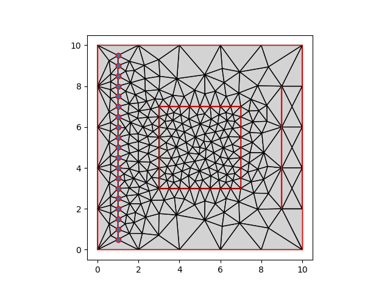
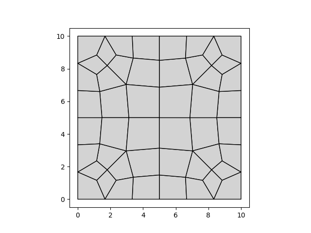

Note
Go to the end to download the full example code.
Basic Gmsh Example#
In this example we’ll create some basic geometries and turn them into meshes. to illustrate some of the mesh generation features that Gmsh provides in combination with polygon, point, and linestring geometries represented by geopandas.
The GmshMesher supports the geometry show in the basic Triangle
example and has a number of additional features.
import geopandas as gpd
import matplotlib.pyplot as plt
import numpy as np
import shapely.geometry as sg
import pandamesh as pm
A simple rectangular mesh#
The most simple example is perhaps a rectangle. We’ll create a vector geometry, store this in a geodataframe, and associate a cell size.
polygon = sg.Polygon(
[
[0.0, 0.0],
[10.0, 0.0],
[10.0, 10.0],
[0.0, 10.0],
]
)
gdf = gpd.GeoDataFrame(geometry=[polygon])
gdf["cellsize"] = 2.0
We’ll use this polygon to generate a mesh. We start by initializing a TriangleMesher, which is a simple wrapper around the Python bindings to the Gmsh C++-library. This wrapper extracts the coordinates and presents them in the appropriate manner for Gmsh.
mesher = pm.GmshMesher(gdf)
vertices, triangles = mesher.generate()
pm.plot(vertices, triangles)
Before we can instantiate another GmshMesher, we need to finalize the old
one.
mesher.finalize()
As the name suggests, Triangle only generates triangular meshes. Gmsh is capable of generating quadrilateral-dominant meshes, and has a lot more bells and whistles for defining cellsizes.
line = sg.LineString([(2.0, 8.0), (8.0, 2.0)])
gdf = gpd.GeoDataFrame(geometry=[polygon, line])
gdf["cellsize"] = [2.0, 0.5]
fig, (ax0, ax1) = plt.subplots(ncols=2)
mesher = pm.TriangleMesher(gdf)
vertices, triangles = mesher.generate()
pm.plot(vertices, triangles, ax=ax0)
mesher = pm.GmshMesher(gdf)
vertices, triangles = mesher.generate()
pm.plot(vertices, triangles, ax=ax1)
Gmsh allows for specifying cell sizes in a more flexible way. Triangle (left) only supports polygons (regions) with fixed cell sizes and explicitly placed vertices. Gmsh is capable of forcing refinement in a larger zone around features as is visible around the diagonal (right).
Defaults#
The GmshMesher class is initialized with a number of default parameters:
print(mesher)
mesher.finalize()
GmshMesher
initialized = True
xoff = 5.0
yoff = 5.0
fields = []
combination_field = CombinationField(fields=[], combination=<FieldCombination.MIN: 'Min'>, id=1, fields_list=[])
tmpdir = <TemporaryDirectory '/tmp/tmpgbhx6dv6'>
recombine_all = False
mesh_size_extend_from_boundary = True
mesh_size_from_points = True
mesh_size_from_curvature = False
field_combination = FieldCombination.MIN
The parameters of Gmsh differ from Triangle, but they work the same: they can be altered after initialization to control the triangulation.
Forcing points, lines, local refinement#
We can force points and lines into the triangulation:
outer = [(0.0, 0.0), (10.0, 0.0), (10.0, 10.0), (0.0, 10.0)]
inner = [(3.0, 3.0), (7.0, 3.0), (7.0, 7.0), (3.0, 7.0)]
donut = sg.Polygon(shell=outer, holes=[inner])
refined = sg.Polygon(inner)
y = np.arange(0.5, 10.0, 0.5)
x = np.full(y.size, 1.0)
points = gpd.points_from_xy(x, y)
line = sg.LineString(
[
[9.0, 2.0],
[9.0, 8.0],
]
)
gdf = gpd.GeoDataFrame(geometry=[donut, refined, line, *points])
gdf["cellsize"] = [2.0, 0.5, 2.0] + (len(points) * [2.0])
mesher = pm.GmshMesher(gdf)
vertices, triangles = mesher.generate()
mesher.finalize()
fig, ax = plt.subplots()
pm.plot(vertices, triangles, ax=ax)
gdf.plot(facecolor="none", edgecolor="red", ax=ax)
# Quadrilateral meshes
# --------------------
#
# One of the features of Gmsh is that it is also capable of generating
# quadrilateral (dominant) meshes, by recombining triangles. We can achieve
# this by changing a parameter on the mesher:
gdf = gpd.GeoDataFrame(geometry=[polygon])
gdf["cellsize"] = 2.0
mesher = pm.GmshMesher(gdf)
mesher.recombine_all = True
vertices, faces = mesher.generate()
pm.plot(vertices, faces)
- 
- 
Writing to file#
It’s also possible to use the Python bindings to write a Gmsh .msh file.
This file can be opened using the Gmsh GUI to e.g. inspect the generated
mesh.
mesher.write("my-mesh.msh")
Conclusion#
In real use, the vector geometries will be more complex, and not based on just a few coordinate pairs. Such cases are presented in the other examples, but the same principles apply: we may use polygons, linestrings and points with associated cell sizes to steer the triangulation; unlike Triangle, for Gmsh cell sizes can associated to linestrings and points, not just polygons.
Total running time of the script: (0 minutes 0.348 seconds)